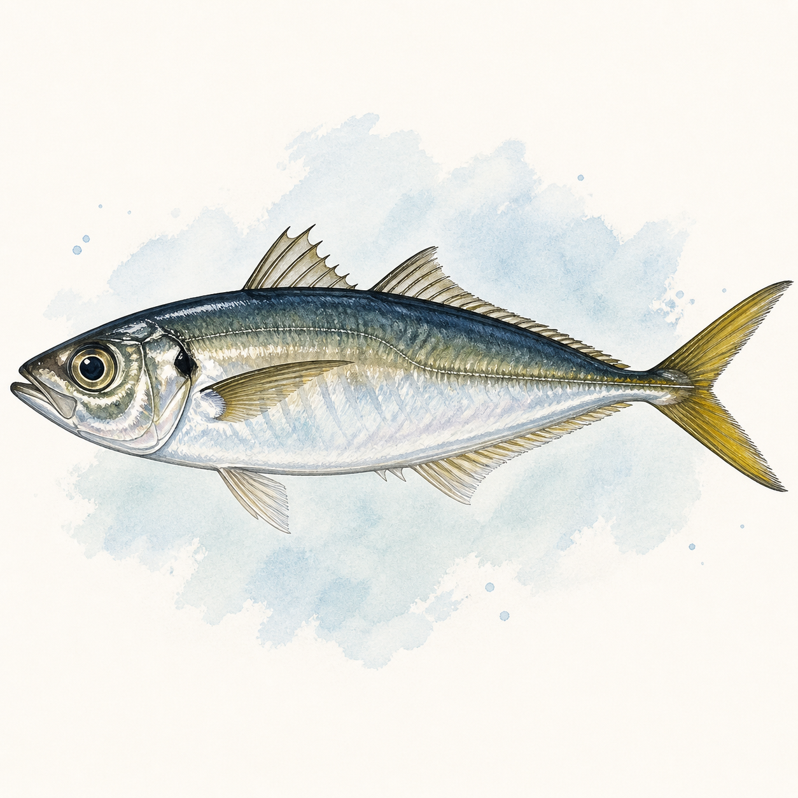

アジ
アジ
0〜109匹
14〜50cm
今週 187便・76船宿
トップ › アジ
神奈川・東京・千葉・茨城・静岡の5県の船宿を横断集計しています。
★ 今週実績あり（5魚種）
★ 今週実績あり（52エリア）
| 1月 | 2月 | 3月 | 4月 | 5月 | 6月 | 7月 | 8月 | 9月 | 10月 | 11月 | 12月 | |
|---|---|---|---|---|---|---|---|---|---|---|---|---|
| 数釣 | ||||||||||||
| 型釣 |
※ 過去3年の関東船釣り釣果データより集計（2023〜2025年）
船釣り全般の Q&A（服装・船酔い・予約・ライフジャケット等）はよくある質問ページにまとめています。
関東アジ船釣りの釣果は4〜5月に実績が集中しています。1〜3月・6〜12月も狙える時期です。
関東アジ船釣りの主なエリアは金沢八景（3230便）、金谷港（1602便）、横浜港･新山下（1438便）です。
関東アジ船釣りの一日の釣果は32〜77匹が標準的なレンジです。最高実績は713匹です。
難易度は入門魚の定番の釣りです。ライトな仕掛けで数釣りを楽しめる入門向きの魚。食いが立てば初心者でもツ抜けが狙えます。関東では183船宿が出船実績あり。多くの船宿でレンタルタックルや仕掛けの購入が可能です。
ビシアジは120〜130号の重いビシで深場の大型を狙う伝統的な釣り、LTアジは30〜40号の軽いビシで水深30m前後の浅場を手軽に楽しむ釣りです。LTアジの方が初心者向けでファミリーにも人気、ビシアジは40cm超の大アジが期待できます。タックルや仕掛けが異なるので、予約時に船宿に確認してください。出典: shikake-taizen.com、fish.shimano.com
新鮮な船アジは刺身・なめろう・たたきが定番です。なめろうは千葉の郷土料理で、味噌・薬味（ねぎ・生姜・大葉）と一緒に細かく叩く漁師飯です。中型〜大型は塩焼き・干物、小アジは南蛮漬けやフライが向きます。釣ったその日に氷締めにして血抜きすると味が格段に良くなります。出典: sirogohan.com、kikkoman.co.jp
東京湾のアジは初夏に産卵を終えた11月以降に脂が乗り型も良くなる傾向です。一方で数釣りは夏場の浅場LTアジ、大型の「金アジ」狙いは冬の深場ビシアジで実績があります。回遊次第なので、日々の釣果情報をチェックしてから出船日を決めると効率的です。出典: fish.shimano.com
